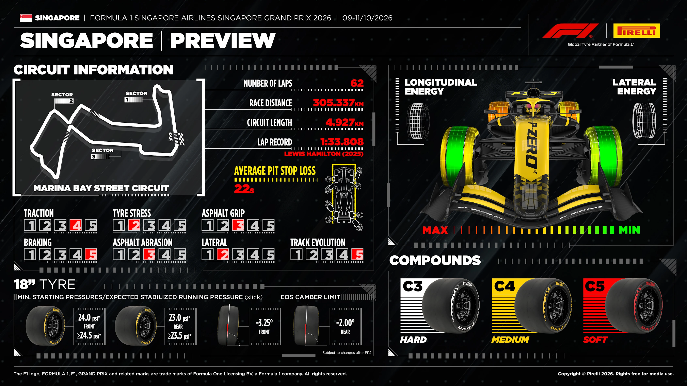
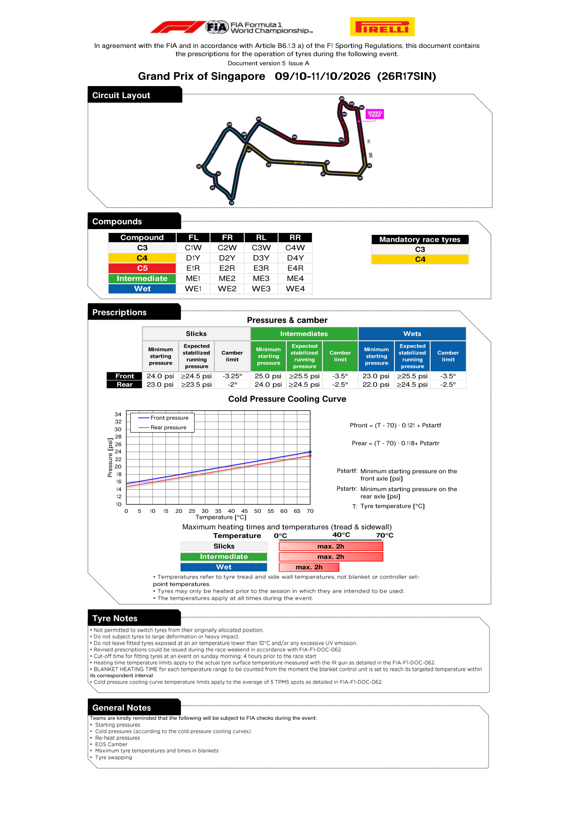

Tyres & Strategy
Official Pirelli allocation, prescriptions and Singapore strategy constraints
Race tyre availability
No verified pre-race set inventory has been collected for this weekend. These charts normally appear after qualifying, not with the earlier compound nomination. A missing chart is not proof of non-publication, and no zero counts or FastF1-derived inventory are substituted.
Source discovery checked 2026-10-09T23:44:47+00:00.
FIA official tyre documents
Official source; curated transcription may await review. Linked PDFs are the authority. Discovery does not extract or verify numeric values, and does not replace the curated material below.
Last successful FIA document discovery: 2026-10-09T23:44:21.896971+00:00. This is retrieval time, not issue time; newer revisions may exist.

C3 / C4 / C5 allocation
FIA/Pirelli operating prescriptions
| Tyre | Front | Rear | Blanket |
|---|---|---|---|
| Slick | 24.0 psi | 23.0 psi | 70°C |
| Intermediate | 25.0 psi | 24.0 psi | 70°C |
| Wet | 23.0 psi | 22.0 psi | 40°C |
Maximum heating time is two hours. Slick camber limits are -3.25° front / -2.0° rear. FIA/Pirelli preview ↗

Strategy watch
The narrow temperature spread between C3, C4 and C5, humid night conditions and limited Sprint-weekend practice make thermal control and clean-air positioning central. C3 and C4 must each be available as the nominated mandatory race compounds; any actual race-set inventory will be published only after Pirelli releases it.
Official FIA document screenshots
Some FIA screenshots could not be refreshed. Any existing images are from successful earlier downloads; use the original PDFs to check later revisions.
Automatically rendered from the official PDFs. These figures do not update or verify the curated numeric transcriptions above. Unchanged pages already illustrated above are not repeated here.